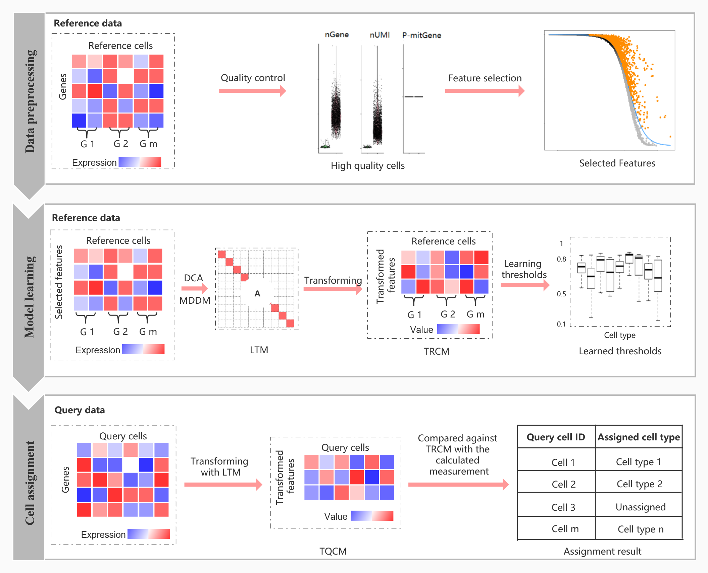

scLearn tutorial: a learning-based framework for single cell assignment
Bin Duan
SJTUbinduan@sjtu.edu.cn
2025-05-12
Source:vignettes/scLearn-tutorial.Rmd
scLearn-tutorial.RmdIntroduction
scLearn is a learning-based framework designed to automatically infer quantitative measurements and similarity thresholds for single-cell assignment tasks. It achieves well-generalized performance across different single-cell types and is particularly robust in identifying novel cell types not present in reference datasets. scLearn introduces a multi-label single-cell assignment strategy for the first time, allowing simultaneous assignment of cell type and developmental stage, which is highly effective for cell development and lineage analysis.

The Overview of scLearn
The scLearn workflow. scLearn comprises three steps: data preprocessing, model learning, and cell assignment. (i) In the first step, the main processes comprise routine normalization, cell quality control, rare cell type filtering, and feature selection; nGene, number of genes; nUMI, number of unique molecular identifiers; P-mitGene, percentage of mitochondrial genes; and G, cell group. (ii) In the second step, for single-label single-cell assignment, discriminative component analysis (DCA) is applied to learn the transformation matrix. For multilabel single-cell assignment, MDDM (multilabel dimension reduction via dependence maximization) is applied to learn the transformation matrix. Then, with the learned transformation matrix, the transformed reference cell samples are obtained for the following assignment. The thresholds for labeling a cell as unassigned for each cell type are also automatically learned. LTM, learned transformation matrix, which can be calculated as the optimal transformation matrix for single-label single-cell assignment or by Eq. 6 for multilabel single-cell assignment, respectively (see Materials and Methods); TRCM, transformed reference cell matrix, which can be calculated using Eq. 1 (see Materials and Methods). (iii) In the third step, the transformed query cell samples are obtained on the basis of LTM with an available optional cell quality control procedure. The transformed query samples are compared against the TRCM to derive the measurement fulfilling the cell-type assignment with the rejection task. TQCM, transformed query cell matrix, which can be calculated using Eq. 2
Installation
if (!require("BiocManager", quietly = TRUE)) {
install.packages("BiocManager")
}
# # Install suggested packages
# BiocManager::install(c(
# "SingleCellExperiment",
# "M3Drop",
# "dml"
# ))
# devtools::install_github("hemberg-lab/scmap")
# BiocManager::install("scLearn")
# install.packages("devtools")
# devtools::install_github("DuanLab1/scLearn", dependencies = c("Depends", "Imports", "LinkingTo"))
library(scLearn)
library(tidyverse)
library(SingleCellExperiment)
library(M3Drop)Single-label single cell assignment
Data preparation
Reference Cell Database: baron-humanQuery Cell Data: Muraro-human
data(RefCellData)
data(QueryCellData)
stratified_sample <- function(cell_types, n_total = 300, min_per_type = 10) {
sampled <- lapply(split(seq_along(cell_types), cell_types), function(idx) {
if(length(idx) > min_per_type) {
sample(idx, max(min_per_type, round(n_total * length(idx)/length(cell_types))))
} else {
idx
}
})
unlist(sampled)
}
set.seed(123)
cell_types <- colData(RefCellData)$cell_type1
sampled_cells <- stratified_sample(cell_types)
RefCellData <- RefCellData[, sampled_cells]
RefCellData## class: SingleCellExperiment
## dim: 20125 342
## metadata(0):
## assays(2): counts logcounts
## rownames(20125): A1BG A1CF ... ZZZ3 pk
## rowData names(10): feature_symbol is_feature_control ... total_counts
## log10_total_counts
## colnames(342): human3_lib3.final_cell_0081 human3_lib1.final_cell_0121
## ... human3_lib3.final_cell_0896 human4_lib1.final_cell_0568
## colData names(30): human cell_type1 ... pct_counts_ERCC is_cell_control
## reducedDimNames(0):
## mainExpName: NULL
## altExpNames(0):
cell_types <- colData(QueryCellData)$cell_type1
sampled_cells <- stratified_sample(cell_types)
QueryCellData <- QueryCellData[, sampled_cells]
QueryCellData## class: SingleCellExperiment
## dim: 19127 311
## metadata(0):
## assays(2): normcounts logcounts
## rownames(19127): A1BG-AS1__chr19 A1BG__chr19 ... ZZEF1__chr17
## ZZZ3__chr1
## rowData names(1): feature_symbol
## colnames(311): D31.7_38 D28.3_4 ... D30.4_58 D31.7_42
## colData names(3): cell_type1 donor batch
## reducedDimNames(0):
## mainExpName: NULL
## altExpNames(0):cell quality control
RefRawcounts <- assays(RefCellData)[[1]]
RefAnn <- as.character(RefCellData$cell_type1)
names(RefAnn) <- colnames(RefCellData)
RefDataQC <- Cell_qc(
expression_profile = RefRawcounts,
sample_information_cellType = RefAnn,
sample_information_timePoint = NULL,
species = "Hs",
gene_low = 500,
gene_high = 10000,
mito_high = 0.1,
umi_low = 1500,
umi_high = Inf,
logNormalize = TRUE,
plot = FALSE,
plot_path = "./quality_control.pdf")rare cell type filtered
RefDataQC_filtered <- Cell_type_filter(
expression_profile = RefDataQC$expression_profile,
sample_information_cellType = RefDataQC$sample_information_cellType,
sample_information_timePoint = NULL,
min_cell_number = 10)feature selection
RefDataQC_HVG_names <- Feature_selection_M3Drop(
expression_profile = RefDataQC_filtered$expression_profile,
log_normalized = TRUE,
threshold = 0.05)
Model learning
Training the model. To improve the accuracy for “unassigned” cell, you can increase “bootstrap_times”, but it will takes longer time. The default value of “bootstrap_times” is 10.
- DCA: Discriminative Component Analysis (DCA) Transformation
scLearn_model_learning_result <- scLearn_model_learning(
high_varGene_names = RefDataQC_HVG_names,
expression_profile = RefDataQC_filtered$expression_profile,
sample_information_cellType = RefDataQC_filtered$sample_information_cellType,
sample_information_timePoint = NULL,
method = "DCA",
bootstrap_times = 1,
cutoff = 0.01,
dim_para = 0.999
)Results：scLearn_model_learning_resultis
the final result file containing the processed reference cell
matrix.
high_varGene_names: The set of highly variable genes (324 HVGs)simi_threshold_learned: The similarity results between cell typestrans_matrix_learned: The transformed matrix (23 features * 324 HVGs)feature_matrix_learned: After DCA, the matrix of cell type features (these features are obtained by dimensionality reduction of the highly variable gene set) (12 celltype * 23 features)
Cell assignment
Assignment with trained model above. To get a less strict result for “unassigned” cells, you can decrease “diff” and “vote_rate”. If you are sure that the cell type of query cells must be in the reference dataset, you can set “threshold_use” as FALSE. It means you don’t want to use the thresholds learned by scLearn.
QueryRawcounts <- assays(QueryCellData)[[1]]
QueryDataQC <- Cell_qc(
expression_profile = QueryRawcounts,
species = "Hs",
gene_low = 50,
umi_low = 50)
rownames(QueryDataQC$expression_profile) <- gsub("__\\w+\\d+", "", rownames(QueryDataQC$expression_profile))
scLearn_predict_result <- scLearn_cell_assignment(
scLearn_model_learning_result = scLearn_model_learning_result,
expression_profile_query = QueryDataQC$expression_profile,
diff = 0.05,
threshold_use = TRUE,
vote_rate = 0.6)## [1] "The number of missing features in the query data is 17 "
## [1] "The rate of missing features in the query data is 0.0524691358024691 "
head(scLearn_predict_result)## Query_cell_id Predict_cell_type Additional_information
## D31.7_38 D31.7_38 unassigned Novel_Cell
## D28.3_4 D28.3_4 unassigned Novel_Cell
## D30.1_63 D30.1_63 ductal 0.877513396467364
## D31.6_53 D31.6_53 ductal 0.898189213920747
## D30.7_39 D30.7_39 ductal 0.828981549060616
## D31.1_22 D31.1_22 ductal 0.839213242283002Results: The output consists of three columns of
information. The Query_cell_id represents the cell ID,
Predict_cell_type indicates the predicted cell type, and
Additional_information provides the similarity results.
- Cells with a
Predict_cell_typeof unassigned are those that do not intersect with the reference cell set.
Accuracy
QueryData_trueLabel <- as.character(QueryCellData$cell_type1)
names(QueryData_trueLabel) <- colnames(QueryCellData)
QueryData_CellType <- QueryData_trueLabel |>
as.data.frame() |>
tibble::rownames_to_column("CellID") |>
dplyr::rename(trueLabel = QueryData_trueLabel) |>
dplyr::inner_join(scLearn_predict_result |>
as.data.frame() |>
dplyr::rename(predLabel = Predict_cell_type),
by = c("CellID" = "Query_cell_id")) |>
dplyr::select(CellID, trueLabel, predLabel, everything())
print(
paste("Final Accuracy =",
sprintf("%1.2f%%",
100 * sum(QueryData_CellType$predLabel == QueryData_CellType$trueLabel) / nrow(QueryData_CellType))))## [1] "Final Accuracy = 81.23%"Multi-label single cell assignment
Data preprocessing
Model learning
Cell assignment: We just use
ESC.rdsitself to test the multi-label single cell assignment here.
Download ESC.rds
# loading the reference dataset
RefData_MLab <- readRDS("ESC.rds")
RefRawcounts_MLab <- assays(RefData_MLab)[[1]]
RefAnn_MLab <- as.character(RefData_MLab$cell_type1)
names(RefAnn_MLab) <- colnames(RefData_MLab)
RefAnn2_MLab <- as.character(RefData_MLab$cell_type2)
names(RefAnn2_MLab) <- colnames(RefData_MLab)
# cell quality control and rare cell type filtered and feature selection
RefDataQC_MLab <- Cell_qc(
expression_profile = RefRawcounts_MLab,
sample_information_cellType = RefAnn_MLab,
sample_information_timePoint = RefAnn2_MLab,
species = "Hs",
gene_low = 500,
gene_high = 10000,
mito_high = 0.1,
umi_low = 1500,
umi_high = Inf,
logNormalize = TRUE,
plot = FALSE,
plot_path = "./quality_control.pdf")
RefDataQC_filtered_MLab <- Cell_type_filter(
expression_profile = RefDataQC_MLab$expression_profile,
sample_information_cellType = RefDataQC_MLab$sample_information_cellType,
sample_information_timePoint = RefDataQC_MLab$sample_information_timePoint,
min_cell_number = 10)
RefDataQC_HVG_names_MLab <- Feature_selection_M3Drop(
expression_profile = RefDataQC_filtered_MLab$expression_profile,
log_normalized = TRUE,
threshold = 0.05)
# training the model
scLearn_model_learning_result <- scLearn_model_learning(
high_varGene_names = RefDataQC_HVG_names_MLab,
expression_profile = RefDataQC_filtered_MLab$expression_profile,
sample_information_cellType = RefDataQC_filtered_MLab$sample_information_cellType,
sample_information_timePoint = RefDataQC_filtered_MLab$sample_information_timePoint,
bootstrap_times = 10,
cutoff = 0.01,
dim_para = 0.999)
# loading the quary cell and performing cell quality control
QueryData_MLab <- readRDS("ESC.rds")
QueryRawcounts_MLab <- assays(QueryData_MLab)[[1]]
### the true labels of this test dataset
# query_ann1 <- as.character(data2$cell_type1)
# names(query_ann1) <- colnames(data2)
# query_ann2 <- as.character(data2$cell_type2)
# names(query_ann2) <- colnames(data2)
# rawcounts2 <- rawcounts2[, names(query_ann1)]
# data_qc_query <- Cell_qc(rawcounts2, query_ann1, query_ann2, species = "Hs")
QueryDataQC_MLab <- Cell_qc(
expression_profile = QueryRawcounts_MLab,
species = "Hs",
gene_low = 50,
umi_low = 50)
# Assignment with trained model above
scLearn_predict_result_MLab <- scLearn_cell_assignment(
scLearn_model_learning_result = scLearn_model_learning_result,
expression_profile_query = QueryDataQC_MLab$expression_profile)
head(scLearn_predict_result_MLab)Pre-trained Models
scLearn provides pre-trained models for 30 datasets and 20 mouse organs datasets, covering a wide range of commonly used cell types and tissues. These models can be directly used for single-cell categorization tasks.
- The information of pre-trained scLearn models of the 30 datasets
| Pre-trained model names | Description | No. of cell types | Corresponding dataset(Journal, date) |
|---|---|---|---|
| pancreas_mouse_baron.rds | Mouse pancreas | 9 | Baron_mouse(Cell System, 2016) |
| pancreas_human_baron.rds | Human pancreas | 13 | Baron_human(Cell System, 2016) |
| pancreas_human_muraro.rds | Human pancreas | 8 | Muraro(Cell System, 2016) |
| pancreas_human_segerstolpe.rds | Human pancreas | 8 | Segerstolpe(Cell Metabolism, 2016) |
| pancreas_human_xin.rds | Human pancreas | 4 | Xin(Cell Metabolism, 2016) |
| embryo_development_mouse_deng.rds | Mouse embryo development | 4 | Deng(Science, 2014) |
| cerebral_cortex_human_pollen.rds | Human cerebral cortex | 9 | Pollen(Nature biotechnology, 2014) |
| colorectal_tumor_human_li.rds | Human colorectal tumors | 5 | Li(Nature genetics, 2017) |
| brain_mouse_usoskin.rds | Mouse brain | 4 | Usoskin(Nature neuroscience,2015) |
| cortex_mouse_tasic.rds | Mouse cortex | 17 | Tasic(Nature neuroscience, 2016) |
| embryo_stem_cells_mouse_klein.rds | Mouse embryo stem cells | 4 | Klein(Cell, 2015) |
| brain_mouse_zeisel.rds | Mouse brain | 9 | Zeisel(Science, 2015) |
| retina_mouse_shekhar_coarse-grained_annotation.rds | Mouse retina | 4 | Shekhar(Cell, 2016) |
| retina_mouse_shekhar_fine-grained_annotation.rds | Mouse retina | 17 | Shekhar(Cell, 2016) |
| retina_mouse_macosko.rds | Mouse retina | 12 | Macosko(Cell, 2015) |
| lung_cancer_cell_lines_human_cellbench10X.rds | Mixture of five human lung cancer cell lines | 5 | CellBench_10X(Nature methods, 2019) |
| lung_cancer_cell_lines_human_cellbenchCelSeq.rds | Mixture of five human lung cancer cell lines | 5 | CellBench_CelSeq2(Nature methods, 2019) |
| whole_mus_musculus_mouse_TM.rds | Whole Mus musculus | 55 | TM(Nature, 2018) |
| primary_visual_cortex_mouse_AMB_coarse-grained_annotation_3.rds | Primary mouse visual cortex | 3 | AMB(Nature, 2018) |
| primary_visual_cortex_mouse_AMB_fine-grained_annotation_14.rds | Primary mouse visual cortex | 14 | AMB(Nature, 2018) |
| primary_visual_cortex_mouse_AMB_fine-grained_annotation_68.rds | Primary mouse visual cortex | 68 | AMB(Nature, 2018) |
| PBMC_human_zheng_sorted.rds | FACS-sorted PBMC | 10 | Zheng sorted(Nature communications ,2017) |
| PBMC_human_zheng_68K.rds | PBMC | 11 | Zheng 68k(Nature communications, 2017) |
| primary_visual_cortex_mouse_VISP_coarse-grained_annotation.rds | Mouse primary visual cortex | 3 | VISp(Nature, 2018) |
| primary_visual_cortex_mouse_VISP_fine-grained_annotation.rds | Mouse primary visual cortex | 33 | VISp(Nature, 2018) |
| anterior_lateral_motor_area_mouse_ALM_coarse-grained_annotation.rds | Mouse anterior lateral motor area | 3 | ALM(Nature, 2018) |
| anterior_lateral_motor_area_mouse_ALM_fine-grained_annotation.rds | Mouse anterior lateral motor area | 32 | ALM(Nature, 2018) |
| middle_temporal_gyrus_human_MTG_coarse-grained_annotation.rds | Human middle temporal gyrus | 3 | MTG(Nature, 2019) |
| middle_temporal_gyrus_human_MTG_fine-grained_annotation.rds | Human middle temporal gyrus | 34 | MTG(Nature, 2019) |
| PBMC_human_a10Xv2.rds | Human PBMC | 9 | PbmcBench_a10Xv2(bioRxiv, 2019) |
| PBMC_human_a10Xv3.rds | Human PBMC | 8 | PbmcBench a10Xv3(bioRxiv, 2019) |
| PBMC_human_CL.rds | Human PBMC | 7 | PbmcBench_CL(bioRxiv, 2019) |
| PBMC_human_DR.rds | Human PBMC | 9 | PbmcBench_DR(bioRxiv, 2019) |
| PBMC_human_iD.rds | Human PBMC | 7 | PbmcBench_iD(bioRxiv, 2019) |
| PBMC_human_SM2.rds | Human PBMC | 6 | PbmcBench_SM2(bioRxiv, 2019) |
| PBMC_human_SW.rds | Human PBMC | 7 | PbmcBench_SW(bioRxiv, 2019) |
- The information of pre-trained scLearn models for the 20 mouse organs datasets
| Trained model names | Description | No. of cell types |
|---|---|---|
| Aorta_mouse_FACS.rds | Mouse aorta | 4 |
| Bladder_mouse_FACS.rds | Mouse bladder | 2 |
| Brain_Myeloid_mouse_FACS.rds | Mouse brain myeloid | 2 |
| Brain_Non-Myeloid_mouse_FACS.rds | Mouse brain non-myeloid | 7 |
| Diaphragm_mouse_FACS.rds | Mouse diaphragm | 5 |
| Fat_mouse_FACS.rds | Mouse fat | 6 |
| Heart_mouse_FACS.rds | Mouse heart | 10 |
| Kidney_mouse_FACS.rds | Mouse kidney | 5 |
| Large_Intestine_mouse_FACS.rds | Mouse large intestine | 5 |
| Limb_Muscle_mouse_FACS.rds | Mouse limb muscle | 8 |
| Liver_mouse_FACS.rds | Mouse liver | 5 |
| Lung_mouse_FACS.rds | Mouse lung | 11 |
| Mammary_Gland_mouse_FACS.rds | Mouse mammary gland | 4 |
| Marrow_mouse_FACS.rds | Mouse marrow | 21 |
| Pancreas_mouse_FACS.rds | Mouse pancreas | 9 |
| Skin_mouse_FACS.rds | Mouse skin | 5 |
| Spleen_mouse_FACS.rds | Mouse spleen | 3 |
| Thymus_mouse_FACS.rds | Mouse thymus | 3 |
| Tongue_mouse_FACS.rds | Mouse tongue | 2 |
| Trachea_mouse_FACS.rds | Mouse trachea | 4 |
Summary
Key Features of scLearn
Robustness and Generalization: scLearn is designed to be robust across various single-cell assignment tasks, providing consistent performance regardless of the cell type or dataset used.
Efficiency in Novel Cell Type Identification: scLearn efficiently identifies novel cell types that are absent in the reference datasets, overcoming limitations of traditional methods that rely on predefined similarity thresholds.
Multi-Label Assignment: scLearn proposes a multi-label assignment strategy, allowing simultaneous assignment of cell type and developmental stage. This dual assignment is particularly useful for understanding cell lineage and development.
Pre-trained Models: scLearn comes with pre-trained models and comprehensive reference datasets for human and mammalian single cells, facilitating broad applications in single-cell assignment.
Citation
B. Duan, C. Zhu, G. Chuai, C. Tang, X. Chen, S. Chen, S. Fu, G. Li, Q. Liu, Learning for single-cell assignment. Sci. Adv. 6, eabd0855 (2020).
For further inquiries or support, please contact bioinfo_db@163.com (binduan@sjtu.edu.cn) or qiliu@tongji.edu.cn.
System information
## R version 4.4.3 (2025-02-28)
## Platform: aarch64-apple-darwin20
## Running under: macOS Sequoia 15.4.1
##
## Matrix products: default
## BLAS: /Library/Frameworks/R.framework/Versions/4.4-arm64/Resources/lib/libRblas.0.dylib
## LAPACK: /Library/Frameworks/R.framework/Versions/4.4-arm64/Resources/lib/libRlapack.dylib; LAPACK version 3.12.0
##
## locale:
## [1] en_US.UTF-8/en_US.UTF-8/en_US.UTF-8/C/en_US.UTF-8/en_US.UTF-8
##
## time zone: Asia/Shanghai
## tzcode source: internal
##
## attached base packages:
## [1] stats4 stats graphics grDevices utils datasets methods
## [8] base
##
## other attached packages:
## [1] M3Drop_1.32.0 numDeriv_2016.8-1.1
## [3] SingleCellExperiment_1.28.1 SummarizedExperiment_1.36.0
## [5] Biobase_2.66.0 GenomicRanges_1.58.0
## [7] GenomeInfoDb_1.42.3 IRanges_2.40.1
## [9] S4Vectors_0.44.0 BiocGenerics_0.52.0
## [11] MatrixGenerics_1.18.1 matrixStats_1.5.0
## [13] lubridate_1.9.4 forcats_1.0.0
## [15] stringr_1.5.1 dplyr_1.1.4
## [17] purrr_1.0.4 readr_2.1.5
## [19] tidyr_1.3.1 tibble_3.2.1
## [21] ggplot2_3.5.1 tidyverse_2.0.0
## [23] scLearn_2.0.0 BiocManager_1.30.25
## [25] BiocStyle_2.34.0
##
## loaded via a namespace (and not attached):
## [1] bitops_1.0-9 gridExtra_2.3 inline_0.3.21
## [4] rlang_1.1.5 magrittr_2.0.3 compiler_4.4.3
## [7] loo_2.8.0 mgcv_1.9-1 systemfonts_1.2.1
## [10] vctrs_0.6.5 pkgconfig_2.0.3 crayon_1.5.3
## [13] fastmap_1.2.0 backports_1.5.0 XVector_0.46.0
## [16] caTools_1.18.3 rmarkdown_2.29 tzdb_0.5.0
## [19] UCSC.utils_1.2.0 ragg_1.3.3 densEstBayes_1.0-2.2
## [22] xfun_0.51 zlibbioc_1.52.0 cachem_1.1.0
## [25] jsonlite_2.0.0 DelayedArray_0.32.0 parallel_4.4.3
## [28] irlba_2.3.5.1 cluster_2.1.8 R6_2.6.1
## [31] dml_1.1.0 StanHeaders_2.32.10 bslib_0.9.0
## [34] stringi_1.8.4 RColorBrewer_1.1-3 rpart_4.1.24
## [37] jquerylib_0.1.4 Rcpp_1.0.14 bookdown_0.42
## [40] rstan_2.32.7 knitr_1.50 base64enc_0.1-3
## [43] timechange_0.3.0 Matrix_1.7-2 splines_4.4.3
## [46] nnet_7.3-20 tidyselect_1.2.1 rstudioapi_0.17.1
## [49] abind_1.4-8 yaml_2.3.10 gplots_3.2.0
## [52] codetools_0.2-20 curl_6.2.2 pkgbuild_1.4.7
## [55] lattice_0.22-6 withr_3.0.2 rARPACK_0.11-0
## [58] evaluate_1.0.3 foreign_0.8-88 desc_1.4.3
## [61] RcppParallel_5.1.10 pillar_1.10.1 KernSmooth_2.23-26
## [64] checkmate_2.3.2 generics_0.1.3 hms_1.1.3
## [67] rstantools_2.4.0 munsell_0.5.1 scales_1.3.0
## [70] gtools_3.9.5 glue_1.8.0 Hmisc_5.2-3
## [73] tools_4.4.3 data.table_1.17.0 RSpectra_0.16-2
## [76] fs_1.6.5 mvtnorm_1.3-3 grid_4.4.3
## [79] bbmle_1.0.25.1 QuickJSR_1.7.0 bdsmatrix_1.3-7
## [82] colorspace_2.1-1 nlme_3.1-167 GenomeInfoDbData_1.2.13
## [85] lfda_1.1.3 htmlTable_2.4.3 Formula_1.2-5
## [88] cli_3.6.4 textshaping_1.0.0 S4Arrays_1.6.0
## [91] V8_6.0.2 gtable_0.3.6 sass_0.4.9
## [94] digest_0.6.37 reldist_1.7-2 SparseArray_1.6.2
## [97] htmlwidgets_1.6.4 htmltools_0.5.8.1 pkgdown_2.1.1
## [100] lifecycle_1.0.4 httr_1.4.7 statmod_1.5.0
## [103] MASS_7.3-64